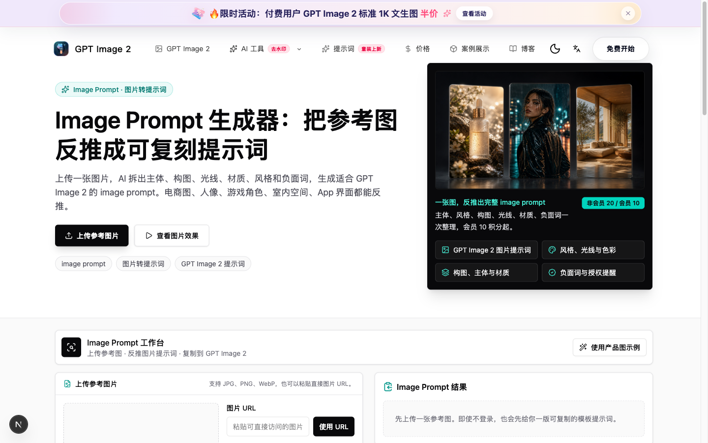
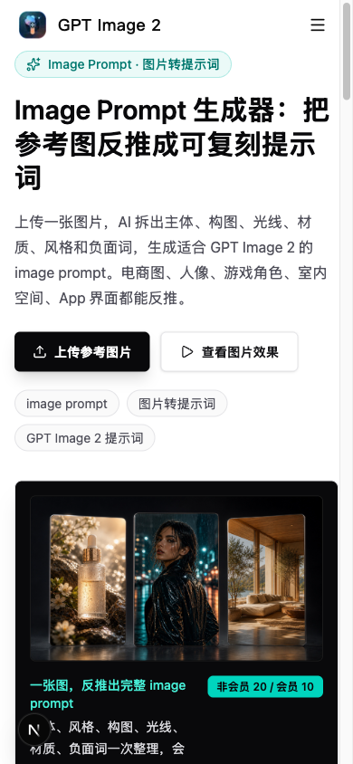
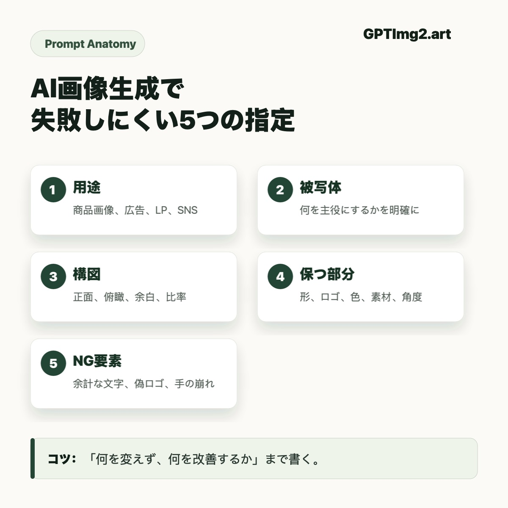
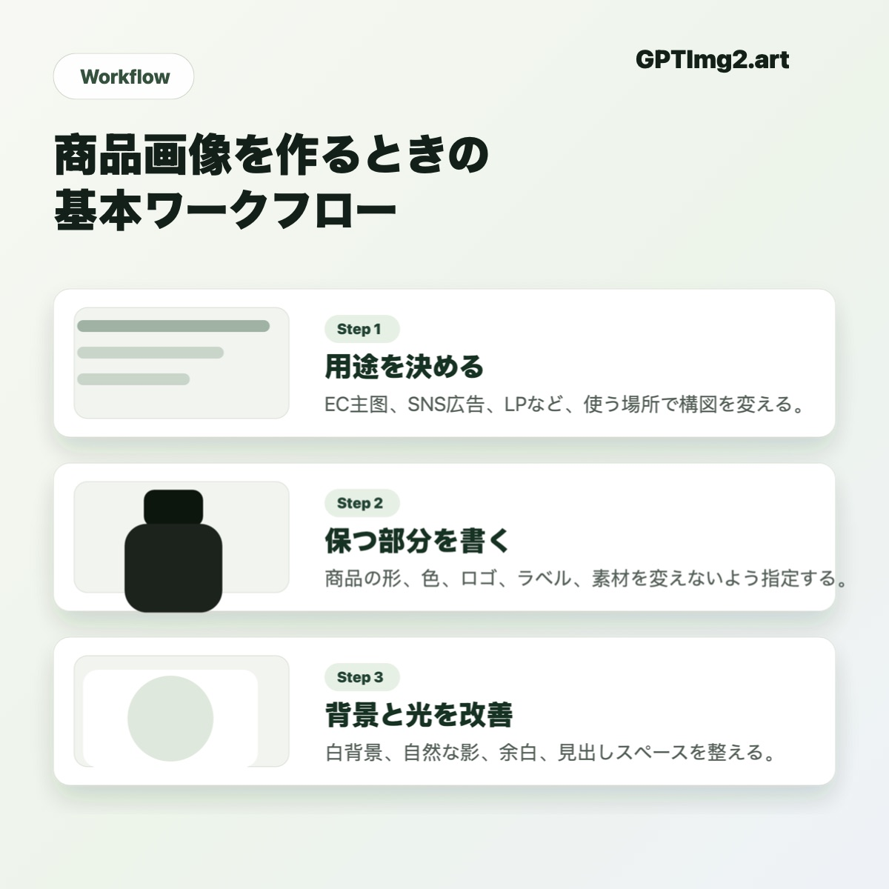

874verified prompt-image pairs
3real source categories
1:1prompt, image, and source page mapping
Product proof
Grounded in GPTImg2’s real prompt workflow.
The gallery now uses real prompt-library images. These screenshots show the surrounding product context and make the repo feel connected to gptimg2.art.



